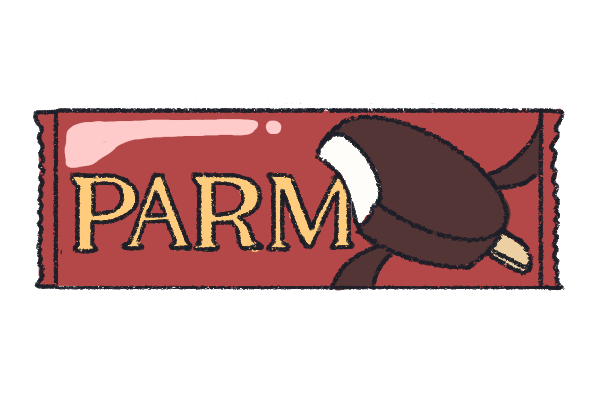

ぎっしりたっぷりアーモンドバー
ザクザクアーモンドとパリパリチョコがとても美味しい！
バニラもくどくなく、飽きることなく食べられる！

papico チョココーヒー
家族や友達とシェアできるのがGOOD!2本入なので、お得感もあり、
食べやすい。
コーヒーが好きな人にもおすすめ!

PALM ノーマル
王道アイス。
少し上品な味わいで風呂上がりに食べたくなるアイス第一位（個人比較）

チョコモナカ ジャンボ
王道アイスの一つ。
サクサクモナカとパリパリ板チョコの食感が楽しく、割りやすいので
友達と分けることも可能！